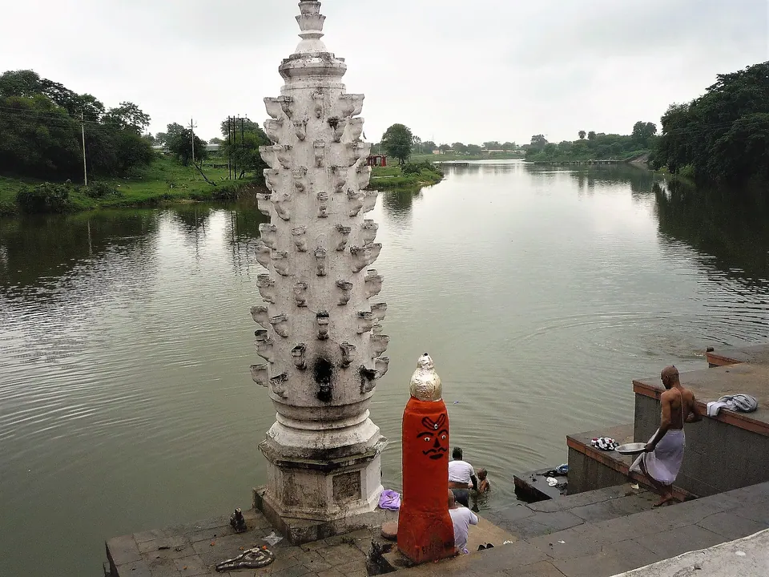
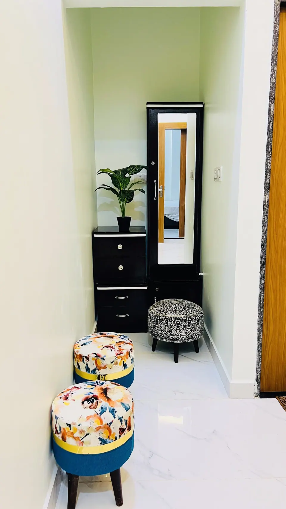

Happy Diwali 2026: The Meaning of Deepavali, Mahakal's Blessing and Our Gift to You

Happy Diwali, and a very Shubh Deepavali to you and everyone you love. Today, Sunday, 8 November 2026, is Diwali and Lakshmi Puja. In Ujjain, Baba Mahakal was among the first to celebrate it: at this morning's Bhasma Aarti he received a fragrant herbal ubtan and a warm-water bath, news reports from the city say. This Diwali week we are also offering 20% off stays booked directly with AP Villas & Resorts. The details are further down.
There is a particular hush in Ujjain just before dawn on Diwali. The lanes around the temple smell of ghee and marigold. Somewhere a conch sounds, a bell answers it, and a grandmother in a shawl folds her hands and whispers "Jai Mahakal" as if she has been waiting all year to say it. We have hosted pilgrim families here since 2021. Every Diwali we see the same thing: people do not travel to Ujjain for a holiday. They come home to something.
This note is our greeting to every family who has stayed with us, every family who will, and everyone reading from a city far away and missing home tonight. Here is what Deepavali means, how it is tied to Mahakal, and a small gift from our home to yours.
What Deepavali means: the significance of Diwali
The word Deepavali means "a row of lamps". At its heart, the festival celebrates light winning over darkness and good winning over evil. Britannica describes it as one of the major religious festivals in Hinduism, lasting five days, with lamps lit to help the goddess Lakshmi find her way into homes.
Every family carries its own story of why the lamps are lit, and all of them are true in their own way:
- The return of Shri Ram. Many families in north India remember Diwali as the night Ayodhya lit lamps to welcome Lord Rama home after fourteen years of exile and his victory over Ravana.
- The welcome of Maa Lakshmi. On the night of Amavasya, homes are cleaned, doors are left open and diyas are placed at every threshold so that the goddess of prosperity feels welcome.
- The fall of Narakasura. The day before, Naraka Chaturdashi, recalls Lord Krishna's victory over the demon Narakasura. That is why many homes rise before dawn for the abhyang snan, an oil-and-ubtan bath.
- Annakut and Govardhan. The day after Diwali remembers Krishna lifting the Govardhan hill, and kitchens across India prepare a "mountain of food" to offer in gratitude.
Under all the stories is one feeling everyone recognises: the year was hard in places, and tonight we choose to light one more lamp anyway. We forgive a little. We hug a little longer. We call the relative we have not spoken to since Holi. That is Diwali.
Diwali 2026 dates: the five days at a glance
Panchangs can differ by a day between regions, so please confirm with your pandit ji. These dates follow Hindutone's Diwali 2026 calendar for Madhya Pradesh, which our Diwali in Ujjain 2026 guide also uses:
- Friday, 6 November: Dhanteras, the day to bring home something small and auspicious.
- Saturday, 7 November: Choti Diwali, Naraka Chaturdashi or Roop Chaudas. In Ujjain the tithi ran into Sunday morning, as explained below.
- Sunday, 8 November: Diwali and Lakshmi Puja, the main night of lamps.
- Monday, 9 November: Govardhan Puja and Annakut.
- Tuesday, 10 November: Bhai Dooj, when sisters pray for their brothers' long life.
How Mahakal is connected to Diwali
In most homes Diwali begins when the first diya is lit. In Ujjain, families will tell you it begins at Mahakal. Lord Mahakal is worshipped as the presiding deity of the city, so the big festivals are celebrated in his courtyard first, before the rest of Ujjain lights its lamps.
This morning's Bhasma Aarti
This year the timing fell beautifully. Kartik Krishna Chaturdashi began on Saturday afternoon, so the tithi at sunrise on Sunday was still chaturdashi. The temple therefore observed Roop Chaudas on Diwali morning itself. According to Hindutone, citing a Free Press Journal report from Ujjain, Baba Mahakal received a fragrant herbal ubtan and a warm-water bath during a special Bhasma Aarti, and two Annakut offerings were planned for the day. TV9 Bharatvarsh also reported the ubtan and the Annakut mahabhog at the temple today.
Think of what that means. The same abhyang snan that a mother gives her child before dawn on Roop Chaudas is offered, with the same love, to the Lord of Time himself. That is what moves us most about Ujjain. Devotion here is not distant. It feels like family.
Mahakal, the one beyond time
Mahakal is worshipped as the lord of Kaal, of time itself. Diwali falls on Amavasya, the darkest night of the month. For devotees, there is a quiet comfort in that: on the darkest night we light lamps, and in the city of the Lord of Time we remember that every dark night ends. Pilgrims say Mahakal takes away the fear of time, and Diwali takes away the fear of darkness. Together they make Ujjain one of the most emotional places in India to spend this festival.
Lamps in the temple courtyard
The temple has marked Diwali with light in earlier years too. In 2022, Business Standard reported that 1,11,000 earthen lamps were lit at the temple after the evening aarti. In 2024, ETV Bharat described a special puja, flower decoration, an abhishek and sparklers lit by priests in the sanctum. Each year's programme is the temple's own decision, so check its announcements before you go. Our Mahakaleshwar Diwali 2026 guide covers darshan and crowds in detail.

Happy Diwali wishes from our family to yours
If you are looking for a few words to send to someone you love tonight, here are some from our heart. Copy them, change them, make them yours:
- "May the light of every diya you light tonight find its way into the corners of your life that needed it most. Happy Diwali."
- "May Maa Lakshmi bless your home with plenty, and may Baba Mahakal keep your family safe through every season. Shubh Deepavali."
- "Deepavali ki dher saari shubhkamnayein. Aapka ghar roshni, mithas aur apno ke pyaar se bhara rahe."
- "Jai Mahakal. May this Diwali end every fear and begin every good thing."
- "Happy Diwali to the family who has always been our light. Thank you for being home."
And to our own guests: some of you came to us as strangers for a Bhasma Aarti and left as family who still send us photos of your children. You are the reason our villas feel like home. Happy Diwali from all of us, our caretakers, our cooks and our family.
Our Diwali gift: 20% off at AP Villas & Resorts
A festival is not complete without sharing, so here is ours. Throughout Diwali week, until Bhai Dooj on Tuesday, 10 November 2026, we are offering 20% off your stay when you book directly with us.
- How to claim it: message us on WhatsApp, say "Happy Diwali" and mention the 20% Diwali offer. We will confirm your dates, villa and final price personally.
- Where it applies: all five AP Villas properties near Mahakaleshwar, for direct bookings only, subject to availability.
- Why direct: when you book with us, you speak to the people who will actually welcome you, explain the Bhasma Aarti booking process on your arrival evening and help your elders settle in.
Whether you want to come for Bhai Dooj, for Kartik Purnima later this month, or simply to thank Mahakal for the year that was, we would be honoured to host you. Please message us before the offer ends on 10 November so that we can hold your dates.
Claim the Diwali offer on WhatsApp
Where to stay near Mahakaleshwar this Diwali week
All five of our villas are within 2 km of Mahakaleshwar Jyotirlinga, about 6 minutes by car or 12 minutes on foot. In-house guests get a complimentary Mahakal shuttle for up to 5 guests per trip. After a long queue and a crowded evening, a short ride home to a quiet room matters more than anything.



Rudrangan Suites: celebrate Diwali the way you would at home
Rudrangan Suites opened in 2026 with designer finishes, premium linens and garden seating for quiet evenings after darshan. It has 3 bedrooms and sleeps 6, from ₹5,200 per night before the Diwali discount. A lift is available, the villa is wheelchair friendly and pets are welcome, which helps when three generations travel together. The kitchen has an induction cooktop and a microwave, so you can boil milk for kheer, warm the oil for a pre-dawn abhyang snan, or simply make a cup of tea while the children draw rangoli at the door.
For other groups, Divinestay (3 bedrooms, sleeps 8) suits larger families, and AP Suite (2 bedrooms, sleeps 4) suits couples and small families. See all five on our villas page, and our travel page for trains, flights and day trips.
Frequently asked questions
When is Diwali 2026?
Diwali and Lakshmi Puja fall on Sunday, 8 November 2026. The five-day festival runs from Dhanteras on Friday, 6 November to Bhai Dooj on Tuesday, 10 November. Regional panchangs can differ by a day, so confirm the puja muhurat with your pandit ji.
What is the significance of Diwali?
Deepavali means "a row of lamps" and celebrates the victory of light over darkness and good over evil. Families remember Lord Rama's return to Ayodhya, welcome Maa Lakshmi on the night of Amavasya, and recall Lord Krishna's victory over Narakasura on the day before.
How is Mahakal connected to Diwali?
Mahakal is worshipped as the presiding deity of Ujjain, and the festival is celebrated in his courtyard first. On Diwali morning in 2026 he received an herbal ubtan and a warm-water bath during the Bhasma Aarti, with Annakut offerings, according to news reports from Ujjain.
What is the AP Villas Diwali offer?
Until Bhai Dooj, Tuesday, 10 November 2026, we are offering 20% off stays booked directly with us on WhatsApp, subject to availability. Mention the Diwali offer when you message us and we will confirm your dates and final price.
Is Ujjain crowded during Diwali week?
Yes, the temple is very busy over the festival, and the weekend of 6 to 8 November is usually the peak. Weekdays after Diwali may be calmer, though we have no official crowd figure. Plan one darshan a day and rest in between.
Sources
- Hindutone: Mahakaleshwar Bhasma Aarti on Diwali 2026
- TV9 Bharatvarsh: Diwali at Mahakaleshwar, 8 November 2026 (Hindi)
- Hindutone: Diwali 2026 in Madhya Pradesh
- Britannica: Diwali
- Business Standard: lamps lit at Mahakaleshwar, 2022
- ETV Bharat: Diwali at Mahakaleshwar, 2024
Festival dates, temple timings and arrangements change from year to year. Please verify before you travel with the official temple or government site.
From our family to yours: may your lamps burn steady, your sweets come out just right, and your home be full of the people you love. If you would like to spend a few days of this light near Baba Mahakal, our caretakers and I are one message away. For anything else, our contact page has the details. Jai Mahakal, and Happy Diwali.
— Apoorv, Founder, AP Villas & Resorts